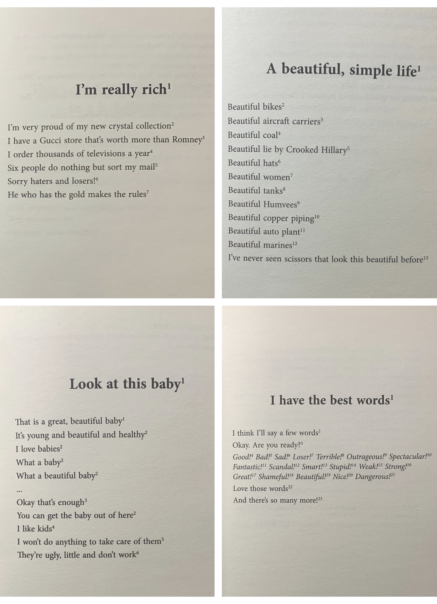

Xintong
10x10x10
Due Date: Oct,22 2020
Introducion
10x10x10 is a hybridized literature work which content is completely based on random sampling. I suddenly got the inspiration of this project when I was wandering in the Humanities and Social Sciences Library of Tsinghua University. I randomly selected ten novels of completely different genres from ten bookshelves and picked out the tenth line of their tenth articles, then I recombined these sentences into a brand new narrative.
Accordingly, here comes to this short article, composed of Mishima Yukio, Zhang Ailing, and George Orwell's sentences, tells a creepy story of a son who killed his serial killer father drived by his shame...
Inspiration
I always have appetite in wired books, during the quarantine I bought a book called The Beautiful Poetry of Donald Trump by Rob Sears. It is not actual Trump's poetry, it is the remixed version by the author. Sears selected sentences from Trump's Twitter and then composited them to become poems. I think this kind of "hybrid literature" is not only interesting, but also very artistic.

Prototype
Reference

Sampling
1. The bicycle bells jingle everywhere, like the sound of the river and the sea. (车铃声叮叮当当地响成一片，像大江大海的声音。)
Ming, Yi. 1992 "
Micro fiction" no.10, 62
2. "I heard you are a poet?" she looked at him, shook his hand.“ (听说你是诗人？”望着他、摇着他女人似的手这样问他。)
Han, Tian. 1993 "名优之死" no.10, 216
3. I squeezed his left hand so that he could not move. He trembled with anger for a long time before yelling: "You little shit!" (我又捏住他的左手，这样他就动弹不得了，他气得哆嗦了半晌，才喊出一句：“孽子！”)
Hua, Yu. 1993 "To Live" 10
4. At this time, through the sparse forest of miscellaneous trees, one can see the swamp gleaming in the lonely autumn day. (这时，通过稀疏的杂木林，远远可以看到下面那个在孤寂的秋日里闪闪发光的沼泽。)
三島, 由紀夫. 1952 "仲夏之死" 10
5. The phoenix trees, there were two still with leaves. (红棕色的杨梧桐，有两棵还有叶子。)
Ailing, Zhang. 1944 "Red Rose and White Rose" no.10, 172
6. This morning, I stood in front of the mirror and got shocked: I found a white hair on my head, gleaming in my black hair, like lightning in the night. (今天早上，我站在镜子前面，不禁大吃一惊：我发现头上有一根白发，在黑发中闪闪发光，就像夜幕上的闪电。)
Chen, Li. "
Arabic Prose" no.10, 34
7. I twisted my body to do such an ugly thing, make a person die for my shame. (让我委屈自己的身子去做这种丑事儿，为了我的耻辱让一个人死掉。)
Machiavelli, Niccolò di Bernardo dei. 1518 "La Mandragola" no.10, 68
8. John Chrystie seems a gentle person, but in fact he is a terrifying pervert killer. He lured women into his apartment room at No. 10 Rellington, killed them with poison gas, and copulated with their corpses. (约翰·克里斯蒂表面上看起来是一位温和的人，但实际上他却是一个恐怖的变态杀手，他将妇女引引诱到他位于雷灵顿10号的公寓房间里，用毒气杀死她们，再与尸体交媾。)
Paul, Bergman. "Reel Justice" no.10, 78
9. Enough empty words, it is time to take action now. (空话已经说够，现在就应该动手了。)
Geertz, Hans Jurgen. 1831 "Faust" no.10, 10
10. there came two people who he only recognize faces but never had conversation with. One of them was the girl he often met in the corridor.(有两个他只认识脸孔、却从未讲过话的人走了过来，其中有一个是他常常在走廊中遇到的姑娘。)
Orwell, George Orwell. 1949"Nineteen Eighty-at Four" 10
Hybridized Outcome
John Chrystie seems a gentle person, but in fact he is a terrifying pervert killer. He lured women into his apartment room at No. 10 Rellington, killed them with poison gas, and copulated with their corpses.
[Yesterday, I helped him bury the corpses by the swamp in the park as usual.] [On our way back,] there came two people who he only recognize faces but never had conversation with. One of them was the girl he often met in the corridor.
"I heard you are a poet?" [the woman] looked at him, shook his hand. [He nodded,] The empty talk has been enough, it is time to take action now. [He offered the lady an invitation to his apartment.]
[I rudely drove this woman away, and] squeezed his left hand so that he could not move. He trembled with anger for a long time before yelling: "You little shit!"
[I eventually drowned him in the swamp.] I twisted my body to do such an ugly thing, I made a person die for my shame.
The phoenix trees [in the park], there were two still with leaves. At this time, through the sparse forest of miscellaneous trees, one can see the swamp gleaming in the lonely autumn day. The bicycle bells jingle everywhere, like the sound of the river and the sea.
This morning, I stood in front of the mirror and got shocked: I found a white hair on my head, gleaming in my black hair, like lightning in the night.
约翰·克里斯蒂表面上看起来是一位温和的人，但实际上他却是一个恐怖的变态杀手，他将妇女引诱到他位于雷灵顿10号的公寓房间里，用毒气杀死她们，再与尸体交媾。
（昨日，我照旧帮他公园沼泽边掩埋尸体。）返程时，有两个他只认识脸孔、却从未讲过话的人走了过来，其中有一个是他常常在走廊中遇到的姑娘。
“听说你是诗人？”（女人）望着他、摇着他女人似手的这样问他。（他点头，）空话已经说够，现在就应该动手了。(他向这位女士提出了去拜访他公寓的邀请。)
(我粗鲁的赶走了这个女人，)又捏住他的左手，这样他就动弹不得了，他气得哆嗦了半晌，才喊出一句：“孽子！”
(我最终在沼泽里溺死了他。)我委屈自己的身子去做这种丑事儿，为了我的耻辱让一个人死掉…
(公园里)红棕色的杨梧桐，有两棵还有叶子。通过稀疏的杂木林，远远可以看到下面那个在孤寂的秋日里闪闪发光的沼泽。车铃声叮叮当当地响成一片，像大江大海的声音。
今天早上，我站在镜子前面，不禁大吃一惊：我发现头上有一根白发，在黑发中闪闪发光，就像夜幕上的闪电。